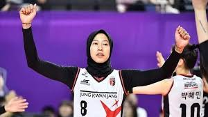

Megawati Hangestri Kembali ke Red Sparks, Menanti Tandem Baru dan Mengembalikan Performa
Rabu, 08 Mei 2024 16:41 WIB
Megawati Hangestri telah dipastikan akan kembali bermain untuk Red Sparks dalam Liga Bola Voli Putri Korea Selatan atau V League 2024-2025. Saat ini, Megawati masih memperkuat Jakarta BIN di Proliga 2024.
Megawati akan bertahan lebih lama di kompetisi Liga Bola Voli Putri Korea Selatan atau V-League. Kepastian itu didapat setelah klub Daejeon JungKwanJang Red Sparks memperbarui kontraknya untuk satu musim. Red Sparks mengumumkan informasi tersebut pada Selasa, 30 April 2024.
Tim voli putri asal Daejeon ini puas dengan performa Megawati yang berkontribusi besar dalam keberhasilan Red Sparks finis ketiga pada musim ini. “Tanpa keraguan, kami memutuskan untuk memperbarui kontrak bersama Mega,” kata kepala pelatih Red Sparks, Ko Hee-jin, dikutip dari The Sports Times.
Giovanna Milana, yang musim lalu menjadi rekannya, tak masuk dalam daftar pemain seleksi kali ini. Pemain asal Amerika itu kini bermain di Proliga Indonesia, bersama Jakarta Pertamina Enduro. Empat pemain lama yang kembali mengikuti try out adalah Letizia Moma (Kamerun), Willow Johnson (Amerika Serikat), Gisele Silva (Kuba-Azerbaijan), dan Vanja Bukiric (Serbia). Musim lalu, Moma membawa Hillstate juara dan terpilih menjadi pemain terbaik atau MVP final melawan Pink Spiders.
Tes pemain asing itu dilakukan Federasi Bola Voli Korea (KOVO) di Dubai, Uni Emirat Arab pada Selasa, 7 Mei, hingga Kamis, 9 Mei.
Duel antara Megawati dan Giovanna Milana gagal. Giovanna Milana cedera yang mengharuskannya mundur dari Proliga. 'Ini bukan cedera yang serius, tetapi akan memakan waktu beberapa pekan untuk saya kembali berolahraga, yang berarti saya akan melewatkan sekitar 8-10 pertandingan (hampir sepanjang musim). Agar Pertamina memiliki kesempatan untuk menjalani musim yang sukses, saya harus diganti saat cedera... Setelah itu, saya tidak bisa kembali sesuai aturan liga,' kata Giovanna Milana melalui postingan Instagramnya @gia__day, Selasa, 7 Mei 2024.
Pada Senin, 30 April 2024, Red Sparks mengumumkan, Megawati Hangestri akan bertahan lebih lama bersama klub mereka untuk tampil di Liga Voli Putri Korea Selatan atau V League 2024-2025.. “Megawati pun ingin menunjukkan performa lebih baik pada musim depan. Kami akan mempersiapkan diri dengan baik demi menciptakan sinergi bagus sejak awal musim,” kata pelatih Red Sparks Ko Hee Jin.
Dari tiga laga yang dijalani Jakarta BIN, Megawati baru tampil dua kali. Dalam kedua laga saat ia tampil, Jakarta BIN juga terus kalah. Dalam kedua laga ini, Megawati menyumbang 39 poin. Proliga 2024 pekan ketiga akan berlangsung di Palembang. Megawati akan kembali tampil pada Kamis, 9 Mei 2024, saat Jakarta BIN melawan Jakarta Elektrik PLN.